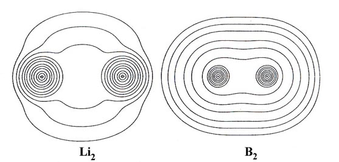
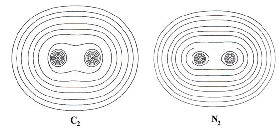
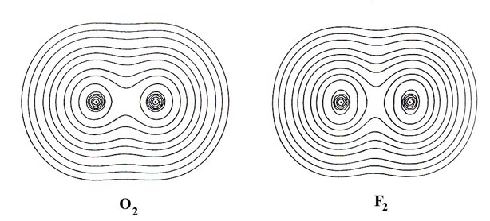
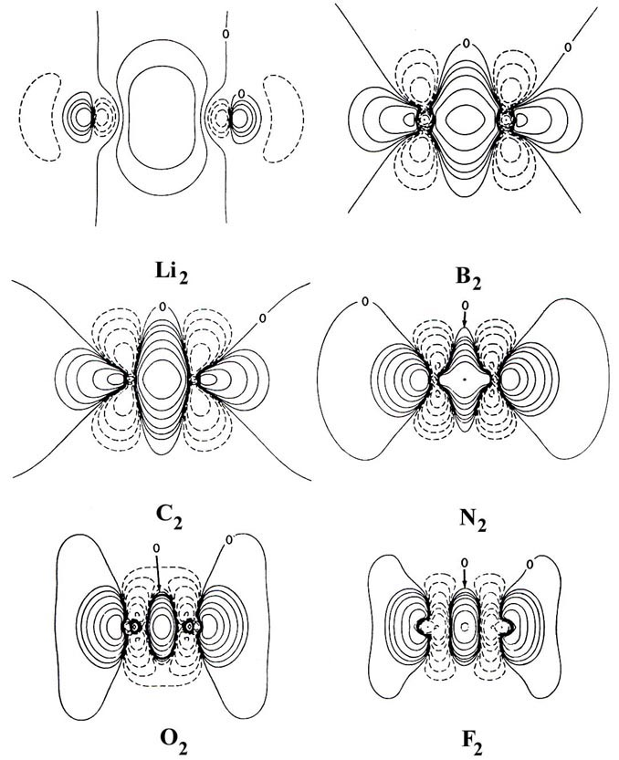
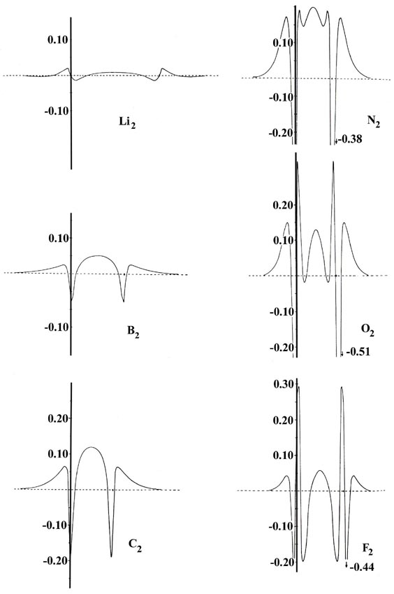

An Introduction to the Electronic Structure of Atoms
and Molecules
Dr. Richard F.W. Bader
Professor of Chemistry / McMaster University / Hamilton,
Ontario
|
Molecular Charge Distributions of Homonuclear Diatomic
Molecules
Contour maps of the charge distributions for the stable homonuclear
diatomic molecules formed from the second-row atoms (Fig.
7-3) provide further examples of covalent binding. The maps illustrate
the relative tightness of binding of the density distributions, the density
in Li2 for example being much more diffuse
than that in N2. Two important physical
dimensions for a molecule are the bond length and the molecular size. The
bond length of a molecule may be directly determined (by X-ray diffraction
techniques or by spectroscopic methods) but the size of a molecule cannot
be as precisely defined or measured. However, molecular diameters may be
inferred from measurements of the viscosity of gas phase molecules and
from X-ray crystallographic studies on the structures of molecular crystals
such as solid N2 and O2.



Fig. 7-3. Countour maps of the molecular charge
distribution for the stable homonuclear diatomic molecules Li2to
F2. Click
here for countour values.
In general over 95% of the molecular charge lies
within the 0.002 contour (the outermost contour illustrated in the
density maps) and it has been found that the dimensions of this contour
agree well with the experimental estimates of molecular sizes. The length
and width of each molecule, defined respectively as the distance between
the intercepts of the 0.002 contour on the molecular axis and on a line
perpendicular to the axis and passing through its mid-point, are given
in Table 7-1 along with the experimental bond
lengths Re
Table 7-1.
Properties of the Total Charge Distributions*
|
A2
|
Re
|
Length
|
Width
|
Nonbonded Radius
|
|
|
|
|
Molecule
|
Atom
|
|
Li2
|
5.051
|
8.7
|
7.8
|
1.8
|
3.3
|
|
B2
|
3.005
|
9.8
|
7.2
|
3.4
|
3.4
|
|
C2
|
2.3481
|
8.5
|
7.0
|
3.1
|
3.2
|
|
N2
|
2.068
|
8.2
|
6.4
|
3.1
|
3.0
|
|
O2
|
2.282
|
7.9
|
6.0
|
2.8
|
2.9
|
|
F2
|
2.68
|
7.9
|
5.4
|
2.6
|
2.8
|
*All distances are given in units of ao = 0.52917
Å.
There is only a rough correlation between the bond length
and the overall length of the molecule. Thus the lengths of N2
and O2 are in the reverse order of their
bond lengths, as is also roughly true experimentally. The lithium molecule
has the largest bond length but a molecular length only slightly larger
than that of C2. There are two factors
which must be considered in understanding the length of a molecule, the
bond length and the rate at which the density falls off from the nucleus
on the side away from the bond. Table 7-1 lists
the distance from the nucleus to the 0.002 contour in the molecule, i.e.,
the radius of the nonbonded charge density, and the radius of the same
contour in the isolated atom. With the exception of Li2,
this distance in the molecule is almost identical to the value in the isolated
atom. Thus the contribution of the two end lengths, beyond the nuclear
separation, to the overall length of a molecule is largely determined by
how tightly the density is bound in the unperturbed atom. The binding of
the atomic densities increases from Li across to F, so that Li and Be are
large and diffuse and N, 0, and F progressively tighter and more compact.
Therefore F2 is smaller in size than N2
or C2 even though it possesses a greater
bond length because the density in the F atom is more tightly bound than
that in the C or N atoms. The Li molecule differs from the others in that
its length is considerably less than expected considering the diffuse nature
of its atomic density. In this case the molecular length is not approximately
equal to the sum of Re and twice the "atomic" radius.
This is, however, easily understood since in the Li atom only one valence-shell
electron is present and in the molecule the charge density of this electron
is concentrated almost exclusively in the binding region. This is further
illustrated by using instead of the 0.002 contour of Li the 0.002 contour
of the 1s2 shell of Li+,
which is in fact equal to the value listed in Table
7-1 for the Li2 molecule.
An estimate of the size of a peripheral atom in a molecule
can thus be obtained by taking the sum of ½Re
from a suitable source and the atomic radius as defined by the 0.002 contour
of the atom (except for Li, Na, etc., where the core radius should be used).
The bond density maps for the second-row homonuclear diatomic
molecules (Fig. 7-4) indicate that the original
atomic densities are distorted so as to place charge in the antibinding
as well as in the binding regions.

Fig. 7-4. Bond density maps for the homonuclear
diatomic molecules. Click
here for contour values
Apart from Li2 the pattern of charge
increase and charge removal in these molecules is similar to that discussed
previously for N2, a pattern ascribed to
the participation of 2ps orbitals in
the formation of the bond. Only Li2 approximates
the simple picture found for H2 of removal
of charge from the antibinding region and a buildup in the binding region.
For the remaining molecules charge density is increasingly accumulated
along the bond axis in both the binding and antibinding regions.
The total accumulation of electronic charge represented
by the regions of positive contours in the binding and antibinding regions
of the bond density maps are listed in Table 7-2.
Table 7-2.
Charge Contained in the Regions of Increase in Bond Density Maps
|
A2
|
Binding Region
|
Antibinding Region
|
|
Li2
|
0.41
|
0.01
|
|
B2
|
0.30
|
0.05
|
|
C2
|
0.50
|
0.06
|
|
N2
|
0.25
|
0.13
|
|
O2
|
0.10
|
0.14
|
|
F2
|
0.08
|
0.10
|
These figures show that in O2 and F2
a greater amount of charge is transferred to the antibinding region of
a single nucleus than to the binding region. It is evident, however, from
the shapes of the contours that the charge increase in the binding region
is concentrated along the bond axis where it exerts a maximum force of
attraction on the nuclei while the buildup in the antibinding region is
more diffuse.
The net forces on the nuclei are zero for each molecule.
Therefore, the force exerted by the charge density in the binding region
balances not only the force of nuclear repulsion but the force exerted
by the charge buildup in the antibinding region as well. The nuclei are
in each case bound by the charge increase which is shared equally by both
nuclei.
An important physical property of a molecule is its bond
energy, the amount of energy required to break the bond or bonds in a molecule
and change it back into its constituent atoms. The bond energies of the
second-row homonuclear diatomic molecules increase from either Li2
or F2 to a maximum value for the central
member of the series, N2 (Table
7-3).
Table 7-3.
Bond Energies for Homonuclear Diatomic Molecules
|
Molecule
|
Bond Energy (ev)
|
Number of electron
|
| |
|
pair bonds
|
|
Li2
|
1.12
|
1
|
|
B2
|
3.0
|
1
|
|
C2
|
6.36
|
2
|
|
N2
|
9.90
|
3
|
|
O2
|
5.21
|
2
|
|
F2
|
1.65
|
1
|
We may rationalize the variation in the bond energies and
the differences in the bond density maps in terms of the orbital theory
of bonding. The simple bonding theory proposed in the preceding chapter
equated the valency of an atom to its number of unpaired electrons. Thus
the number of electron pair bonds formed between atoms in this series of
molecules is predicted to be one for Li2,
B2 and F2,
two for C2 and O2,
and three for N2. Reference to Table
7-3 reveals a parallelism between the bond energy and the number of
electron pair bonds present in each molecule.
The detailed variation in bond energy through the series
can be accounted for in terms of the type of bond (whether it is formed
for s or p orbitals) present in each molecule, a feature
which is clearly reflected in the bond density maps, and even more strikingly
portrayed in their profiles (Fig. 7-5).

Fig. 7-5. Profiles
of the bond density maps for the homonuclear diatomic molecules.
The bond in Li2 is formed primarily
from the overlap of 2s atomic orbitals on each lithium atom. The
2s atomic density of lithium is a diffuse spherical distribution.
These same characteristics are evident in the total charge distribution
for Li2 and particularly in its bond density
map. The charge increase in the binding region, while large in amount (Table
7-2), is very diffuse and the bond density profile shows that
relative to the other molecules, the charge increase is not concentrated
along the bond axis. These are the very features expected for a bond resulting
from the overlap of distorted, nondirectional s orbitals.
B2 and F2
also have but a single pair bond. However, the bonds in these two molecules
are formed primarily from the overlap of 2ps
orbitals. Since a ps orbital is directed
along the bond axis, it is more effective than an s orbital at concentrating
charge density along this same axis. This is particularly evident when
we compare the profiles of the bond densities for F2
and B2 with the profile for Li2.
Similarly, the presence of two electron pair bonds and the still larger
bond energies found for C2 and O2
are reflected in the larger increases in the charge densities along the
internuclear axis in the binding region. Notice that while B2
concentrates three times as much charge as O2
in the binding region, it is not concentrated along the bond axis to as
great an extent as in O2, and consequently
its bond energy is the smaller of the two.
The nitrogen molecule possesses three electron pair bonds
and the largest bond energy of the molecules in this series. The charge
increase in the binding region is concentrated along the bond axis to a
far greater extent in this molecule than in any of the other molecules
in the series. This concentration of the charge density gives N2
a stronger bond than C2 even though the
total charge increase in its binding region is only one half as great as
that for C2.
The comparison of the bond energies in this series of molecules
clearly illustrates that the strength of a bond is not simply related to
the number of electronic charges in the binding region. As important as
the amount of charge is the exact disposition of the charge
density in the molecule, whether it is diffuse or concentrated.